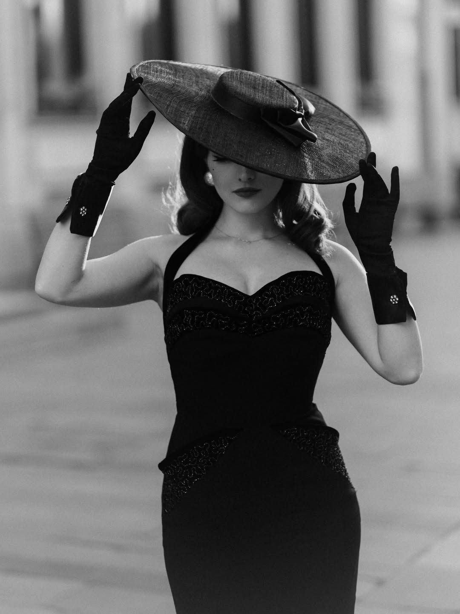

História
da Moda
Uma jornada através do tempo,
estilo e cultura.

Um breve percurso
Da antiguidade
às passarelas
A moda sempre foi mais do que roupa.
Ela é expressão, cultura, arte e poder.
Desde os trajes da antiguidade até os desfiles contemporâneos, a moda reflete os costumes e transforma o mundo.
Grandes marcos
Ícones que
marcaram a história
De Coco Chanel a Alexander McQueen, grandes nomes revolucionaram o jeito de se vestir e deixaram um legado eterno na indústria da moda.



A moda é história,
mas também é futuro.
E continua se reinventando, sempre.